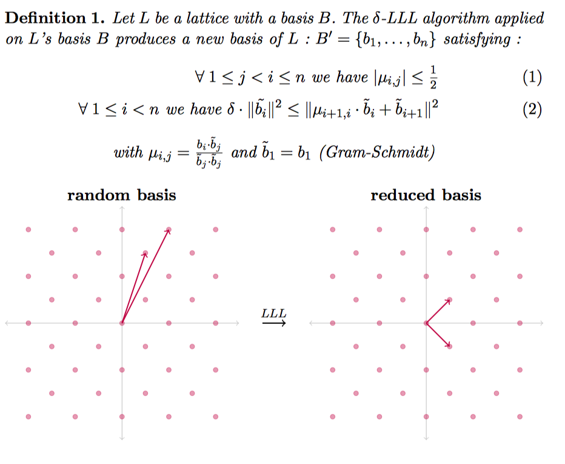

格基规约
Lenstra – Lenstra – Lovasz
basic introduction
The LLL algorithm is to find a set of bases on the lattice, which satisfies the following effects.

Moreover, the following properties of the base generated by this method are very useful.

Simple application
Here I will give a second example from LLL paper. Given n real numbers $\alpha_i,...,\alpha_n$, find the rational linear approximation of the n numbers, ie find n numbers $m_i$, so that $\sum\limits_{i=1}^{n }m_i\alpha_i$ is equal to 0 as much as possible. We can construct a matrix like this, where $a_i$ is a rational approximation of $\alpha_i$.
$$ A = \left[ \begin{matrix} 1 & 0 & 0 & \cdots & 0 & ca_1 \ 0 & 1 & 0 & \cdots & 0 & c a_2 \ 0 & 0 & 1 & \cdots & 0 & c a_3 \\vdots & \vdots & \vdots & \ddots & \vdots \ 0 & 0 &0 & \cdots & 1 & c a_n \ \end{matrix} \right]$$
The matrix is n*(n+1), we can find the determinant corresponding to this lattice according to the method of finding the determinant.
$ Det (L) = \ sqrt {AA} $ ^ T
We further consider such a matrix
$$ A = \left[ \begin{matrix} 1 & 0 & 0 & \cdots & 0 & a_1 \ 0 & 1 & 0 & \cdots & 0 & a_2 \ 0 & 0 & 1 & \cdots & 0 & a_3 \\vdots & \vdots & \vdots & \ddots & \vdots \ 0 & 0 &0 & \cdots & 1 & a_n \ \end{matrix} \right]$$
Then
$$ AA^T = \left[ \begin{matrix} 1+a_1^2 & a_1a_2 & a_1a_3 & \cdots & a_1a_n \ a_2a_1 & 1+a_2^2 & a_2a_3 & \cdots & a_2a_n \ a_3a_1 & a_3a_2 & 1+a_3^2 & \cdots & a_3a_n \ \vdots & \vdots & \vdots & \ddots & \vdots \ a_na_1 & a_na_2 &a_na_3 & \cdots & 1+a_n^2 \ \end{matrix} \right]$$
Further, let's try it from low-dimensional to high-dimensional (strictly prove that you can consider adding a row and a column, the upper left corner is 1), and the determinant of the lattice is
$\sqrt{1+\sum\limits_{i=1}^n\alpha_i^2}$
Can refer to the following proof of the postgraduate Yuge

Then after the LLL algorithm, we can get
$||b_1|| \leq 2^{\frac{n-1}{4}} (1+\sum\limits_{i=1}^n\alpha_i^2)^{\frac{1}{2(n+1)}}$
In general, the latter item tends to 1 when it is opened n times, because $a_i$ is a constant and is generally not related to n, so
$||b_1|| \leq 2^{\frac{n-1}{4}}*k$
k is relatively small. In addition, $b_1$ is a linear combination of the original vectors, then
$b_1[n]=\sum\limits_{i=1}^{n}m_ica_i=c\sum\limits_{i=1}^{n}m_ia_i$
Obviously if c is large enough, then the subsequent summation must be small enough to satisfy the above constraints.
Reference
- Survey: Lattice Reduction Attacks on RSA